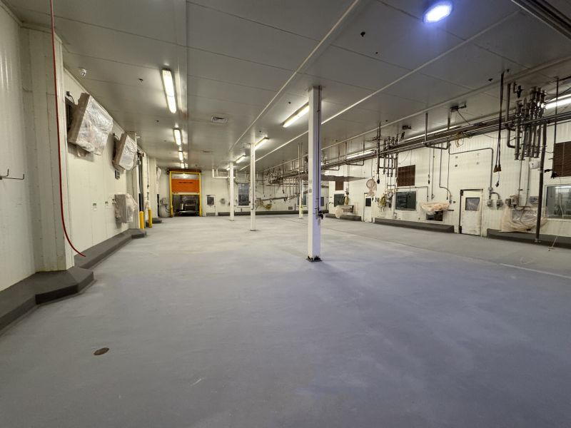
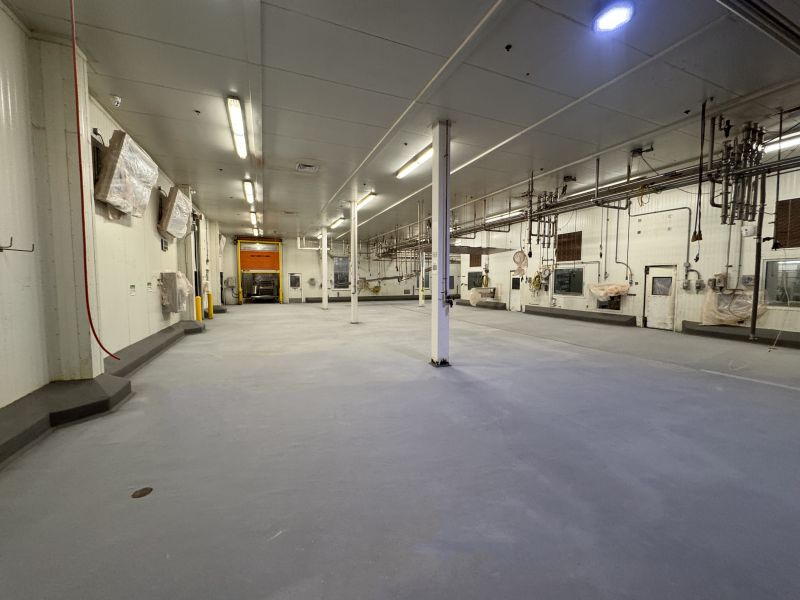

This is shutdown season. Processors don't get many shutdown windows throughout the year, so when they do, execution matters. Over the Christmas break, our crew completed a full 4,200 SF production floor replacement — removing the old delaminated flooring and installing our SaniCrete STX stainless steel reinforced cementitious urethane system with 250 linear feet of new curbing.
Before: A Failing Floor
The existing floor had completely delaminated — a common failure mode when the wrong flooring system is installed in a food processing environment. The old coating was cracking, peeling, and creating harborage points for bacteria. It had to go.
The Scope
Our crew worked through the Christmas shutdown window to complete the full replacement:
- Demolition — Removed all delaminated flooring down to bare concrete
- Surface profiling — Prepared the substrate for maximum adhesion
- SaniCrete STX — Installed 3/8" stainless steel reinforced cementitious urethane across the full 4,200 SF production area
- Curbing — Built 250 linear feet of new curbs for containment and equipment separation
Our Crew at Work
SaniCrete STX is our flagship product — a 3/8" cementitious urethane system reinforced with twisted stainless steel fibers that delivers double the strength of traditional floors. It's built to handle the thermal shock, chemical exposure, and heavy impact that food processing environments demand.
After: Ready for Production
 

4,200 square feet of seamless, stainless steel reinforced flooring — installed during the Christmas shutdown and ready for production on schedule. No delays. No excuses. That's shutdown season done right.
Products Used
- SaniCrete STX — 3/8" stainless steel reinforced cementitious urethane